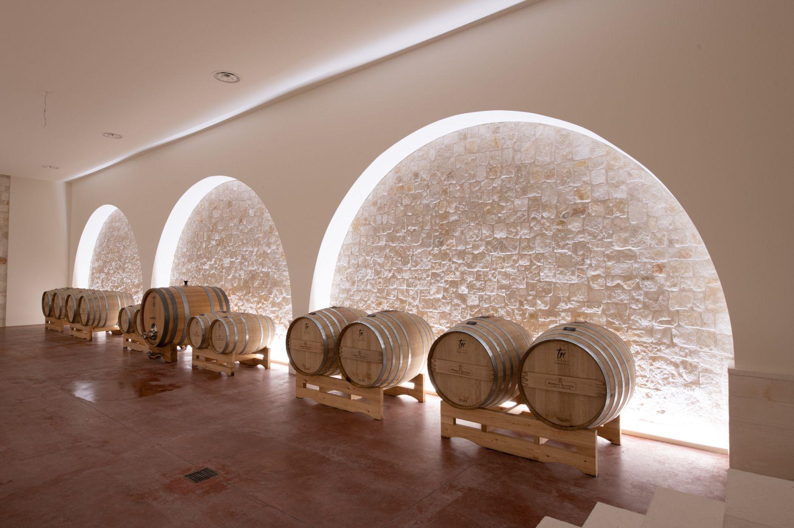
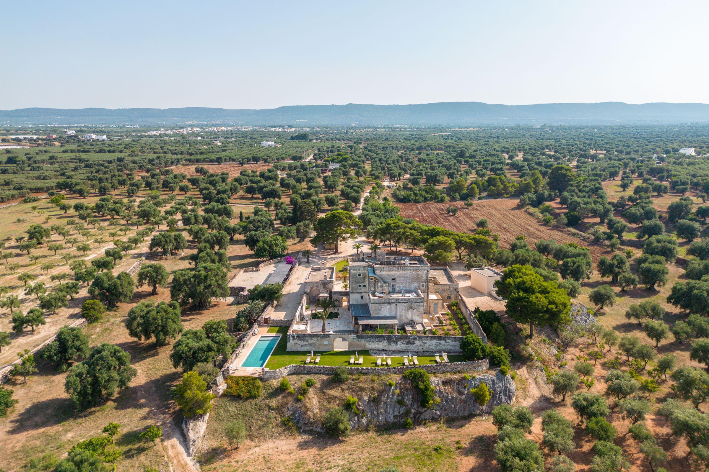
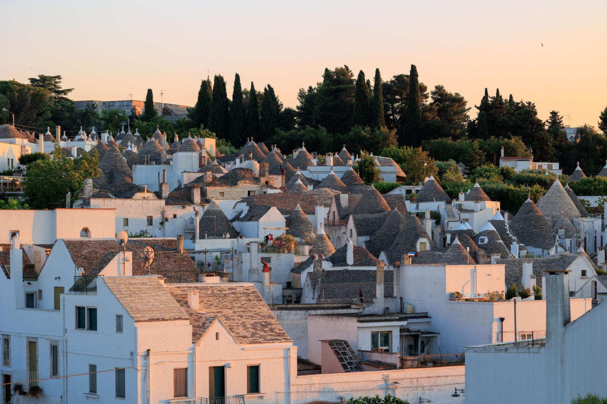
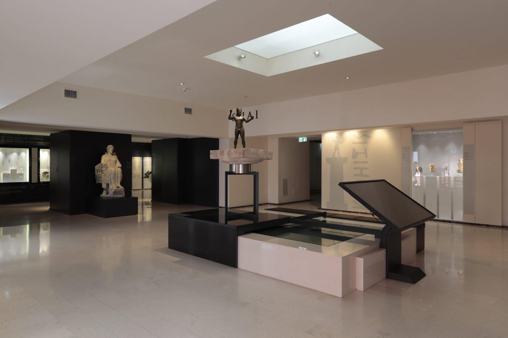

Agosto
La Notte della Taranta
location_onMelpignano (LE)
Il più grande festival di musica popolare d'Europa dedicato alla pizzica salentina.
Non luoghi da vedere, ma vissuti da ricordare. In Puglia ogni esperienza ha un'identità precisa: il mare del Gargano è diverso da quello del Salento, un pranzo in masseria non assomiglia a nessun ristorante, e la pizzica è un ritmo che si sente nelle ossa. Scegli la tua.

Impara a fare le orecchiette a Bari Vecchia dalle signore del posto.

Visita le cantine di Manduria e degusta il celebre vino rosso pugliese.

Scopri come nasce l'olio d'oliva pugliese con degustazioni in antichi frantoi.
La Puglia produce il 40% dell'olio italiano. Scopri le cultivar principali.
La storia delle signore di Bari Vecchia che tramandano l'arte delle orecchiette.
Un itinerario di 4 giorni tra pane di Altamura, burrata e vino.

Visita il misterioso castello ottagonale di Federico II (UNESCO).

Passeggia tra le caratteristiche abitazioni in pietra con tetto a cono (UNESCO).

A Taranto per scoprire i tesori della Magna Grecia e i famosi Ori.
Un itinerario di 4 giorni tra fortezze federiciane e cattedrali romaniche.
Scopri i borghi più pittoreschi: Alberobello, Locorotondo, Cisternino.